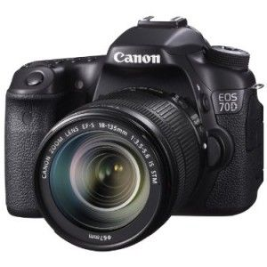
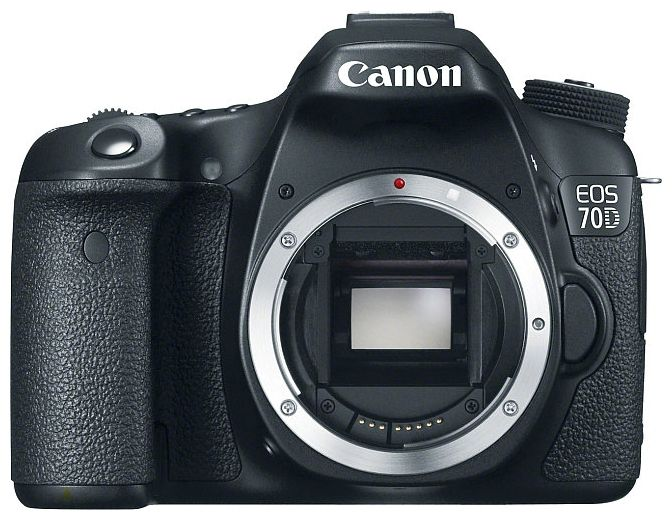
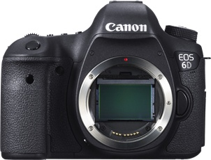

| EOS 70D EF-S 18-135mm IS STM Kit |
- Canon's innovative Dual Pixel CMOS AF enables you to shoot video like a camcorder with smooth, fast, and accurate autofocus; lets you enjoy instant and precise autofocus even when shooting stills from a variety of angles with the freedom provided by the Vari-angle LCD; and provides amazing autofocus power with 103 compatible Canon EF lenses when shooting photos or video.
- Built-in wireless technology allows you to wirelessly transfer your images to social networking sites through CANON iMAGE GATEWAY
|
You Pay: $1,549.00 |
Getting into photography was the best decision I have made. I am happy that I get to start with the 70D to learn the ins and outs of what it takes to take good shots. 70D so far has made it easier for me to learn the basics while switching on and off to manual and auto to really understand the shots you can get. Still have lots to learn just wish Canon had classes here in DC. |
EOS 70D Body |
- Canon's innovative Dual Pixel CMOS AF enables you to shoot video like a camcorder with smooth, fast, and accurate autofocus; lets you enjoy instant and precise autofocus even when shooting stills from a variety of angles with the freedom provided by the Vari-angle LCD; and provides amazing autofocus power with 103 compatible Canon EF lenses when shooting photos or video.
- Built-in wireless technology allows you to wirelessly transfer your images to social networking sites through CANON iMAGE GATEWAY
20.2 Megapixel CMOS (APS-C) sensor, 14-bit A/D conversion, ISO
| You Pay: $1,199.00 |
Upgrade from the Canon Rebel 3ti. Huge improvements. I didn't think I would use the touch screen but I just love it for FAST changes to f stop or ISO without pushing buttons and wheel. Very good feel to hand with a solid grip. Not much heavier than the Rebel but a more solid feel. This camera has tons of features over the rebel and worth every penny (dollar) difference especially if you already have a collection of EF or EF-S lenses. I have had this for four months and have taken probably 4000 images (went on two photo workshops) I took both the 70D and the Rebel thinking I could swap between each fitted wioth different lenses. I ended up using the 70D almost exclusively as it felt more secure, more features, touch screen, level. |
EOS 60Da Body |
- increased IR sensitivity for astrophotography allowing crisp, clear images of reddish, diffuse nebulae.
- 18.0 Megapixel CMOS (APS-C) sensor, ISO 100-6400; expandable to ISO 12800 (H) and high performance DIGIC 4 Image Processor
|
You Pay: $1,499.00 |
From what i have seen it looks to be a good camera. But there is a bad batch of 60D and 60Da cameras out there. I got mine and it worked for 4 hours then i powered it off and that was it. It never powered up again. So until i get one that works i do not know how good it realy is. They should recall all of the unsold cameras and test them. |